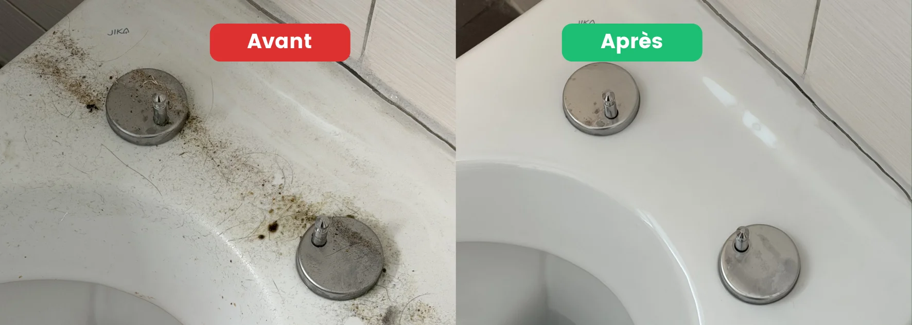

- Commencer en novembre : décembre laisse peu de marge, entre fêtes et jours fériés
- Fixer la date de l'état des lieux tôt, par écrit, avec la régie
- Nettoyer en journée : la lumière artificielle cache les traces que la régie verra
- Vitres extérieures : éviter de les nettoyer par temps de gel
- Ne pas couper le chauffage trop tôt : l'humidité favorise les moisissures
Pourquoi une fin de bail en décembre est différente
Une fin de bail suit toujours les mêmes étapes. En décembre, ce qui change, c'est le calendrier.
- Les jours fériés de Noël et du Nouvel An réduisent les jours disponibles pour nettoyer, déménager et faire l'état des lieux.
- Les régies peuvent fonctionner à effectif réduit entre Noël et le Nouvel An. Un rendez-vous qui se décale peut vous coûter plusieurs jours.
- Le froid complique le nettoyage des vitres extérieures et ralentit le séchage.
- Les journées courtes laissent peu d'heures de lumière naturelle pour nettoyer et contrôler.
- Les créneaux des déménageurs et des entreprises de nettoyage se remplissent en fin d'année.
Terme et préavis : ce qu'il faut vérifier
Nous ne sommes pas juristes : cette section donne les repères, votre contrat fait foi.
- Pour un logement, le préavis légal est de 3 mois (art. 266c du Code des obligations), pour un terme fixé par l'usage local ou par le contrat.
- Le terme de votre bail figure sur votre contrat. Les termes usuels varient selon les cantons : le 31 décembre n'est pas partout un terme usuel.
- Un bail à durée déterminée prend fin à la date convenue, sans résiliation.
- Pour la date et l'heure de remise des clés, fiez-vous au contrat et à ce que confirme la régie par écrit.
En cas de doute, la régie ou une association de locataires comme l'ASLOCA peut vous renseigner.
Le rétroplanning de novembre au jour J
| Échéance | À faire |
|---|---|
| Début novembre (8 semaines avant) | Relire le bail et l'état des lieux d'entrée, fixer la date de l'état des lieux avec la régie, réserver déménageurs et nettoyage |
| Mi-novembre | Trier, donner, débarrasser, repérer les points longs (joints, calcaire, hotte, taches) |
| Début décembre | Traiter les points longs, déplacer les appareils pour voir le sol dessous |
| 1 à 2 semaines avant | Nettoyer en journée, pièce par pièce, du haut vers le bas |
| Avant les fêtes | Photographier chaque pièce (photos datées), rassembler clés, badges et télécommandes |
| Veille ou matin de l'état des lieux | Contrôler avec une lampe en lumière rasante, passer la main sur les surfaces |
Les 5 pièges propres à la période
1. Réserver trop tard
Les fins de mois et la fin d'année concentrent les demandes. Pour un déménagement comme pour un nettoyage, réservez dès novembre si vous le pouvez.
2. Compter sur la semaine entre Noël et Nouvel An
Entre jours fériés et vacances, les artisans, les régies et les équipes sont moins disponibles. Mieux vaut avoir terminé le gros du nettoyage avant les fêtes.
3. Nettoyer les vitres extérieures par temps de gel
Par température négative, l'eau gèle sur le verre et le résultat est mauvais. Attendez une journée au-dessus de zéro, ou faites intervenir un professionnel équipé.
4. Contrôler à la lumière artificielle
Il fait nuit tôt, et une lampe de plafond cache les traces. Nettoyez et contrôlez en pleine journée, avec une lampe en lumière rasante en renfort. C'est exactement ce que fait la régie.
5. Couper le chauffage trop tôt
Un logement qui refroidit sèche mal. L'humidité s'installe et la condensation favorise les moisissures, surtout sur les joints de fenêtre et de salle de bain. Gardez un chauffage modéré jusqu'à l'état des lieux.

Faire soi-même ou déléguer en décembre
| Critère | Faire soi-même | Déléguer à un professionnel |
|---|---|---|
| Temps nécessaire | Plusieurs jours en soirée ou le week-end | Quelques heures à une journée |
| Conditions de décembre | Journées courtes, froid | Équipe et matériel adaptés |
| Points techniques (hotte, joints, calcaire) | Demandent méthode et produits | Traités avec le bon matériel |
| Risque de retenue sur caution | Plus élevé si le temps manque | Réduit, avec une garantie écrite |
| Budget indicatif | Produits et temps | 450 à 700 CHF pour un 2.5 pièces, 700 à 1'100 CHF pour un 4.5 pièces |
Ces fourchettes sont indicatives et varient selon l'état du logement.
Vous partez fin décembre ?
Nettoyage de fin de bail · garantie retour gratuit
Voir le service fin de bail →Ce qu'il faut savoir sur l'état des lieux de fin d'année
- Confirmer la date et l'heure par écrit avec la régie
- Avoir en main l'état des lieux d'entrée et vos photos datées
- Être présent, ou se faire représenter par une personne de confiance munie d'une procuration écrite
- Lire le procès-verbal avant de signer
Pour savoir ce que la régie regarde, et dans quel ordre, lisez Ce que la régie vérifie vraiment lors d'un état des lieux. Pour la méthode complète, Comment faire valider son état des lieux du premier coup détaille chaque étape.
FAQ – Fin de bail en décembre
Peut-on faire l'état des lieux entre Noël et le Nouvel An ?
Oui, mais c'est plus délicat. Les régies peuvent avoir des horaires réduits. Fixez la date tôt, confirmez-la par écrit, et gardez une marge si possible.
Un nettoyage professionnel est-il obligatoire pour une fin de bail ?
Non, pas légalement. Mais en décembre, avec le froid, les jours courts et le calendrier serré, beaucoup de locataires préfèrent déléguer pour sécuriser leur caution.
Peut-on nettoyer les vitres extérieures quand il gèle ?
Non, ce n'est pas idéal. L'eau gèle sur le verre et laisse des traces. Attendez une journée au-dessus de zéro, ou confiez-les à une équipe équipée.
Faut-il laisser le chauffage allumé jusqu'à l'état des lieux ?
Oui, de façon modérée. Un logement trop froid sèche mal et favorise la condensation, donc les moisissures. Un chauffage à bas régime suffit.
Combien de temps à l'avance faut-il réserver ?
Au moins 3 à 4 semaines à l'avance pour une période chargée comme la fin d'année, et dès novembre si vous le pouvez. Pour une urgence, contactez-nous quand même : nous regardons ce qui est possible.
En résumé
Une fin de bail en décembre se réussit en novembre. Fixez la date de l'état des lieux tôt, avancez vos préparatifs de 2 semaines, nettoyez en journée, ne coupez pas le chauffage trop tôt et gardez des photos datées. Les fêtes ne rendent pas la fin de bail plus difficile, elles la rendent moins pardonnante si on s'y prend tard.